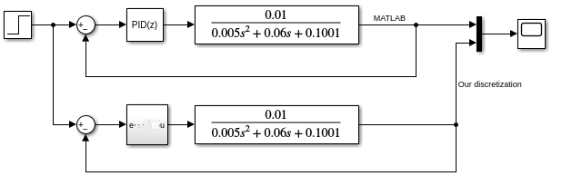
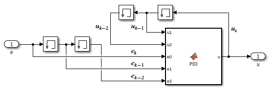

Digital PID Control¶
Required imports¶
from IPython.core.display import HTML
import numpy as np
from sympy import *
from mathprint import *
init_printing(fontsize='5pt')
Define symbols¶
Kp, Ki, Kd = symbols('K_p K_i K_d', positive=True)
Ts, N = symbols('T_s N', positive=True)
s, sd, si = symbols('s s_D s_I', complex=True)
z = symbols('z')
e, u = symbols('e u')
e0, e1, e2, u0, u1, u2 = symbols('e_k e_{k-1} e_{k-2} u_k u_{k-1} u_{k-2}')
PID control in s-domain¶
Let us start with defining our PID control in continuous form.
Gpid = Kp + Ki/s + Kd*s # PID-control
mprint("G(s)= ", latex(Gpid))
From this point onwards, let us state for any arbitrary system:
\(e(t)\) is the input to the controller, which is the error between the target and the actual output of the system
\(u(t)\) is the computed control signal that will be sent to the system
\(T_s\) is the sampling period of the digital controller
PD-control with ZOH (Backward Euler)¶
Let us perform the following substitution:
Gpd = Kp + Kd*s # PD-control
Gpd = Gpd.subs(1/s, Ts / (1 - 1/z))
mprint("G_{PD}=", latex(Gpd))
Gpd = collect(factor(Gpd),z)
mprintb("G_{PD}=", latex(Gpd))
Now, let us apply the input and compute the control output.
eq = Eq(u, Gpd * e)
mprint(latex(eq))
eq = (Eq(numer(eq.rhs), eq.lhs * denom(eq.rhs)))
mprint(latex(eq))
eq = Eq(eq.lhs/Ts/z, eq.rhs/Ts/z)
mprint(latex(eq))
eq = expand(eq).subs(e/z**2, e2).subs(e/z, e1).subs(e, e0).subs(u/z, u1)
mprint(latex(eq))
upd = collect(eq.lhs, [Kp, Kd/Ts])
mprintb("u=", latex(upd))
PID-control with ZOH (Backward Euler)¶
Gpid = Kp + Ki/s + Kd*s # PID-control
Gpid = Gpid.subs(1/s, Ts / (1 - 1/z))
mprint("G_{PID}=", latex(Gpid))
Gpid = collect(factor(Gpid), [z, z**2])
mprintb("G_{PID}=", latex(Gpid))
Now, let us apply the input and compute the control output.
eq = Eq(u, Gpid * e)
mprint(latex(eq))
eq = factor(eq)
mprint(latex(eq))
eq = Eq(numer(eq.rhs), eq.lhs * denom(eq.rhs))
mprint(latex(eq))
eq = expand(eq)
mprint(latex(eq))
eq = expand(Eq(eq.lhs/z**2/Ts, eq.rhs/z**2/Ts ))
mprint(latex(eq))
eq = expand(eq).subs(e/z**2, e2).subs(e/z, e1).subs(e, e0).subs(u/z, u1)
mprint(latex(eq))
eq = ratsimp(eq.lhs)
mprint("u-u_{k-1}=", latex(eq))
eq = collect(eq, [Kp, Ki, Kd])
mprintb("u-u_{k-1}=", latex(eq))
PD-control with bilinear transformation¶
Let us perform the following substitution:
Gpd = Kp + Kd*s # PD-control
Gpd = Gpd.subs(1/s, Ts/2 * (z+1)/(z-1) )
mprint("G_{PD}=", latex(Gpd))
Gpd = collect(factor(Gpd),z)
mprintb("G_{PD}=", latex(Gpd))
eq = Eq(u, Gpd * e)
mprint(latex(eq))
eq = factor(eq)
mprint(latex(eq))
eq = Eq(numer(eq.rhs), eq.lhs * denom(eq.rhs))
mprint(latex(eq))
eq = expand(eq)
mprint(latex(eq))
eq = expand(Eq(eq.lhs/z**2/Ts, eq.rhs/z**2/Ts ))
mprint(latex(eq))
eq = expand(eq).subs(e/z**2, e2).subs(e/z, e1).subs(e, e0).subs(u/z**2, u2).subs(u/z, u1)
mprint(latex(eq))
eq = ratsimp(eq.lhs)
mprint("u-u_{k-1}=", latex(eq))
eq = collect(eq, [Kp, Ki, 2*Kd])
mprintb("u-u_{k-1}=", latex(eq))
PID-control with bilinear transformation¶
Gpid = Kp + Ki/s + Kd*s # PID-control
Gpid = Gpid.subs(1/s, Ts/2 * (z+1)/(z-1) )
mprint("G_{PID}=", latex(Gpid))
Gpid = factor(Gpid)
Gpid = collect(numer(Gpid), [z, z**2]) / expand(denom(Gpid))
mprintb("G_{PID}=", latex(Gpid))
Now, let us apply the input to the output.
eq = Eq(u, Gpid * e)
mprint(latex(eq))
eq = factor(eq)
mprint(latex(eq))
eq = Eq(numer(eq.rhs), eq.lhs * denom(eq.rhs))
mprint(latex(eq))
eq = expand(eq)
mprint(latex(eq))
eq = expand(Eq(eq.lhs/z**2/Ts, eq.rhs/z**2/Ts ))
mprint(latex(eq))
eq = expand(eq).subs(e/z**2, e2).subs(e/z, e1).subs(e, e0).subs(u/z**2, u2)
mprint(latex(eq))
eq = ratsimp(eq.lhs)
mprint("u-u_{k-2}=", latex(eq))
eq_ = collect(eq, [2*Kp, Ki*Ts, 4*Kd])
mprintb("u-u_{k-2}=", latex(eq_))
eq_ = collect(expand(eq), [e0, e1, e2])
mprintb("u-u_{k-2}=", latex(eq_))
PID-control with ZOH (both Forward and Backward Euler) and derivative filter¶
If we use MATLAB Simulink, we will notice that the MATLAB Simulink allows us to use various discrete forms for its PID control. Additionally, in MATLAB Simulink, the derivative term is equpped with a first-order low-pass filter.
For validation purposes, let us use the default options where MATLAB Simulink presents us with the following discrete PID formula:
We can see that:
for the integral term: ZOH with Forward Euler:
for the derivative term: ZOH with backward Euler:
Since the two \(s\) variables are going to be substituted differently, we introduce \(s_I\) for the integral term and \(s_D\) for the derivative term.
Gpid = Kp + Ki/si + Kd*N/(1+N/sd) # PID-control
mprint("G_{PID}=", latex(Gpid))
Gpid = Gpid.subs(([1/si, Ts / (z-1)],
[sd , (z-1) / (Ts *z)]))
mprint("G_{PID}=", latex(Gpid))
eq = Eq(u, Gpid * e)
mprint(latex(eq))
eq = factor(eq)
mprint(latex(eq))
eq = Eq(numer(eq.rhs), eq.lhs * denom(eq.rhs))
mprint(latex(eq))
#eq = expand(eq)
#mprint(latex(eq))
eq = expand(Eq(eq.lhs/z**2/Ts/N, eq.rhs/z**2/Ts/N ))
mprint(latex(eq))
eq = (eq.subs(e/z**2, e2).subs(e/z, e1).subs(e, e0).subs(u/z**2, u2).subs(u/z, u1).subs(u, u0))
mprint("\\small ", latex(eq))
eq =Eq(collect(eq.rhs, [u0, u1, u2]), collect(eq.lhs, [e0, e1, e2]))
mprintb("\\small ", latex(eq))
Comparison with MATLAB Simulink¶
Simulink file: download it here (for MATLAB R2024b).

